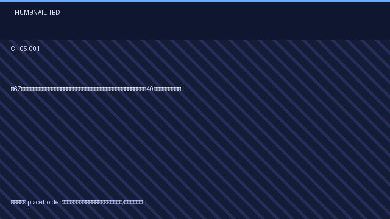
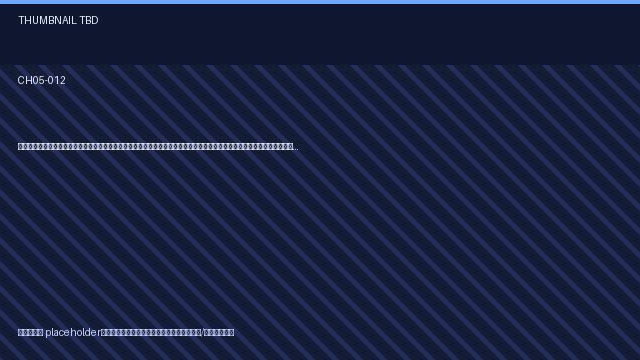
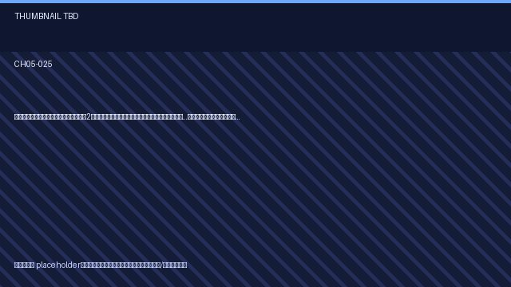
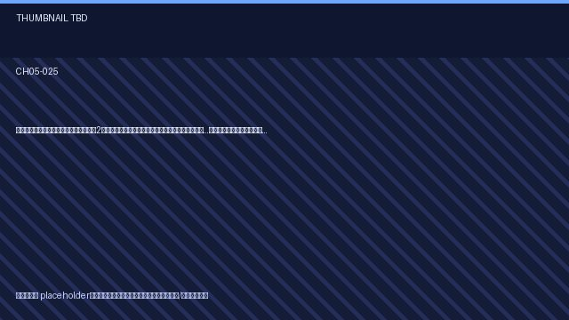

シニアの温かい恋愛【体験談】 (CH05) script 30/31
updated_at: 2026-01-13T13:11:39.158540Z
URL例:
/ep/CH05/001/thumb/   
 
CH05-001
【67歳の挑戦】亡き夫の「遺言」で始めたマッチングアプリ。「いいね」を押してくれたのは、40年前に別れた初恋の人でした。
script ✓画像 —
CH05-002
【シニアの青春】70歳で入った市民大学。「隣の席の元教頭先生、私のこと、生徒みたいに叱るんです」それが恋の始まりだった。
script ✓画像 —
CH05-003
【隣人トラブル】「毎晩うるさい！」隣室のバイオリンの音に怒鳴り込んだら、出てきたのは元オーケストラの指揮者だった。「君のために弾こう」と言われ…。
script ✓画像 —
CH05-004
【体験談】シルバー人材センターでペアを組んだのは、ライバル会社の元部長。「君のところのやり方は気に食わん！」と喧嘩ばかりだったのに…。
script ✓画像 —
CH05-005
【感動】孫の運動会、一人で応援に来ていた私。隣で同じく一人だった彼が「お孫さん、うちの孫と仲良しなんですよ」と声をかけてきた。
script ✓画像 —
CH05-006
【朗読】深夜ラジオのDJに「40年前に別れた恋人へ」と手紙を送った。数日後、番組で私の手紙が読まれ、彼からのアンサーソングが流れた時、涙が止まらなかった。
script ✓画像 —
CH05-007
【ミステリー】夫の遺品から出てきた、見知らぬ女性へのラブレター。「嫉妬」の二文字を胸に会いに行ったら、その女性は夫がずっと支援していた孤児だった。
script ✓画像 —
CH05-008
【豪華客船の恋】72歳、人生初クルーズ。ダンスパーティーで誘われず壁の花だった私に「一曲、いかがです？」と手を差し伸べてくれたのは、船の機関士だった。
script ✓画像 —
CH05-009
【禁断の恋？】息子の嫁の父親と、孫の誕生会で意気投合。「子供たちが結婚したんだ、我々も親戚だな」なんて笑っていたら、いつの間にか二人で会う仲に…。
script ✓画像 —
CH05-010
【危険な香り】エレベーターで出会った初老男性に、理性ごと奪われた日
script ✓画像 —
CH05-011
【シニアの健康】毎年受ける人間ドック。「来年もここで会いましょう」が合言葉だったのに、その日、彼が現れることはなかった…。
script ✓画像 —
CH05-012
【家庭菜園】きゅうりの育て方で大喧嘩した、隣の畑の頑固おやじ。「俺のやり方が絶対だ！」と言い張る彼が、こっそり私の畑に肥料をやるのを見てしまった。
script ✓画像 —
CH05-013
【俳句の会】「老いらくの恋、恥ずかしき、蟬しぐれ」と詠んだ私。選者の先生が「素晴らしい句だ。…私のことですかな？」と、静かに微笑んだ。
script ✓画像 —
CH05-014
【カラオケ】スナックでいつもデュエットする相手。「銀座の恋の物語」を歌う時だけ、彼は役者になる。でも、その夜「これは本気だよ」と手を握ってきた。
script ✓画像 —
CH05-015
【ペットロス】愛犬を亡くし、悲しみに暮れる私。動物霊園でいつも会う彼も、愛猫を亡くしたばかりだった。「あの子たち、今頃虹の橋で友達になってるかな」
script ✓画像 —
CH05-016
【バスツアー】一人で参加した日帰りバスツアー。隣の席になった無口な彼が、サービスエリアで私のために「みたらし団子」を買ってきてくれた。
script ✓画像 —
CH05-017
【秘密の共有】「この店、潰れちゃうんだって」行きつけの喫茶店のマスターにそう告げられた夜。同じく常連だった彼と「二人だけの秘密にしよう」と約束した。
script ✓画像 —
CH05-018
【再就職】66歳、清掃のパートで再就職。指導係は、私より年下の62歳。「あなた、手際が悪いわね」と厳しい彼女に、なぜか惹かれてしまった。
script ✓画像 —
CH05-019
【ボランティア】地域のゴミ拾いボランティア。「こんなことしても、街は綺麗にならんよ」と皮肉ばかり言う彼が、誰よりも熱心にゴミを拾っていた。
script ✓画像 —
CH05-020
【図書館の奇跡】いつも同じ席で歴史小説を読んでいる彼。ある日、私が返却した本を、彼が借りていった。本の最終ページに、感想を書いたメモを挟んでみたら…。
script ✓画像 —
CH05-021
【料理教室】「味が濃すぎる！」と私の料理を酷評した料理研究家の先生。でも、教室の後「君の作る肉じゃが、オフクロの味に似てる」と照れながら言った。
script ✓画像 —
CH05-022
【思い出の場所】閉園する遊園地。40年前に妻と来たメリーゴーランドの前で、一人涙ぐんでいると「あなたも、お別れを言いに？」と、同じく一人の女性に声をかけられた。
script ✓画像 —
CH05-023
【カメラ】野鳥の撮影が趣味の私。最高のシャッターチャンスを狙っていたら、ファインダーの先に、いつも見かける彼が、鳥に餌をやっている姿が…。
script ✓画像 —
CH05-024
【朗読】69歳、詐欺に遭って全財産を失った。「もう死のう」と海に来たら、同じく、事業に失敗したという彼と出会った。「死ぬ前に、ラーメンでも食うか」
script ✓画像 —
CH05-025
【年の差】娘が再婚した相手は、私より2歳年下だった。「お義母さん、なんて呼ばないで。…由美子さん」と彼に呼ばれるたび、いけないと分かっているのに…。
script ✓画像 —
CH05-026
【お遍路】亡き夫の供養のため、一人で始めたお遍路の旅。雨宿りしたお堂で出会ったのは、同じく妻を亡くしたという彼だった。「あと八十七箇所、一緒に歩きませんか」
script ✓画像 —
CH05-027
【ドローン】孫へのプレゼントで買ったドローンに、私がハマってしまった。空撮仲間と集まる公園で、いつも的確なアドバイスをくれる師匠（74歳）を、いつしか目で追っていた。
script ✓画像 —
CH05-028
【歴史】城跡巡りが趣味の私。石垣の前で熱く語り合えるのは、いつも会う彼だけだった。「この城で、落ち合いませんか」まるで戦国時代の密会のようで…。
script ✓画像 —
CH05-029
【シェアハウス】子供も独立し、広い家を持て余した私が始めたシニア向けシェアハウス。最後の入居者は、20年前に離婚した元夫だった。
script ✓画像 —
CH05-030
【夫婦の秘密】結婚45年目、夫の書斎で見つけた交換日記。そこには、私に言えなかった「愛してる」の言葉が、毎日綴られていた。
script ✓画像 —
CH05-999
script —画像 —